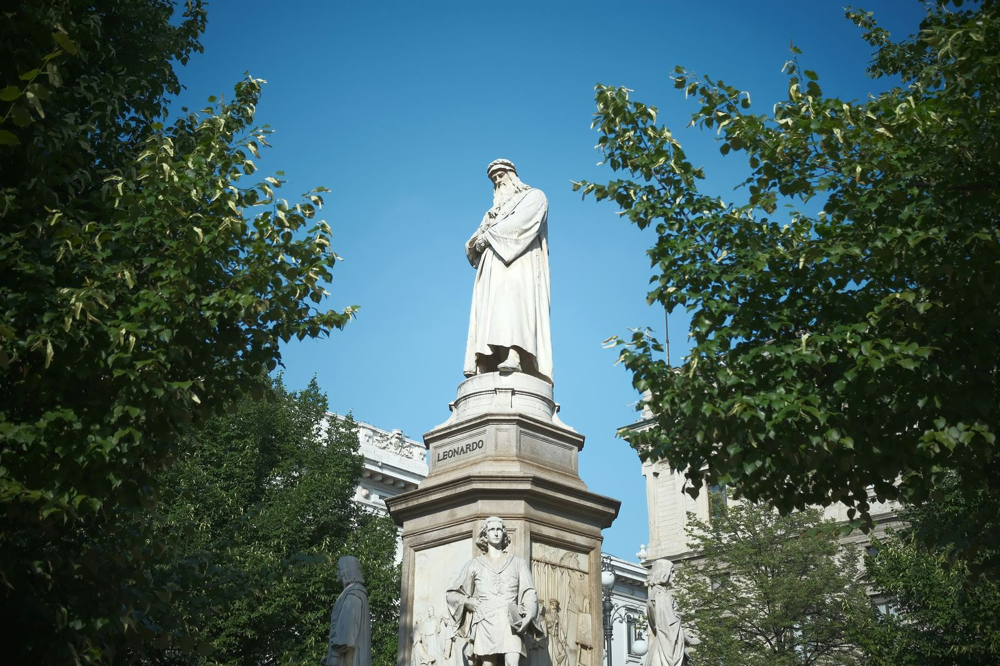

Explore the timeless masterpiece of Leonardo da Vinci, La Gioconda (or Mona Lisa), and unravel the mysteries behind this iconic painting. Discover the artistry and symbolism that continue to captivate the world.
Esplora il capolavoro senza tempo di Leonardo da Vinci, La Gioconda (o Monna Lisa), e scopri i misteri dietro a questo dipinto iconico. Scopri l'arte e il simbolismo che continuano a incantare il mondo.
Avete mai sentito parlare della celebre opera d'arte di Leonardo da Vinci, La Gioconda, conosciuta anche come Monna Lisa? Oggi vi porteremo alla scoperta di questo capolavoro che continua ad affascinare il mondo intero.

Leonardo dipinse La Gioconda tra il 1503 e il 1514 a Firenze, e oggi possiamo ammirarla al Louvre di Parigi. Commissionata da Giuliano de’ Medici, l'opera non fu mai davvero considerata "terminata" dal genio stesso, che continuava a modificarla nel corso del tempo.
Chi è la misteriosa donna ritratta nel dipinto? Si dice che sia Lisa Gherardini, moglie di Francesco del Giocondo, una famiglia fiorentina di spicco. Il suo sguardo enigmatico e il leggero sorriso ci catturano ancora oggi.
Ma non è solo la figura della donna a stupire: lo sfondo roccioso e fluviale è tipico dello stile di Leonardo, che amava rappresentare la natura in modo realistico. Si pensa che il paesaggio sullo sfondo sia ispirato alla campagna toscana, con il fiume Arno che scorre attraverso le terre di Arezzo e la Val di Chiana.
Analizzando il dipinto, possiamo notare l'uso sapiente delle linee curve e sinuose, che conferiscono continuità al quadro. I colori tenui e sfumati creano un gioco di luci e ombre che dà profondità ai volumi, soprattutto nel volto e nei vestiti della donna.
La Gioconda è un'opera che va oltre l'arte: è un'indagine scientifica. Leonardo, infatti, applicò le sue conoscenze anatomiche per rendere il volto e le espressioni il più realistici possibile.

L'importanza di questa opera è enorme: è stata oggetto di omaggi, tributi e persino di un furto rocambolesco nel 1911, quando il dipinto sparì dal Louvre per essere poi recuperato due anni dopo. Ancora oggi, esistono dubbi sull'autenticità dell'originale conservato a Parigi.
In conclusione, La Gioconda è molto più di un dipinto famoso. È un simbolo dell'arte e della maestria di Leonardo da Vinci, che continua a ispirare e affascinare artisti e studiosi di tutto il mondo.
fonte: La Gioconda, Monna Lisa, Leonardo da Vinci - Analisi
Parole chiave
| Dipinto | Un'opera creata usando colori su una superficie. |
| Donna | Una persona di genere femminile. |
| Sguardo | La direzione in cui una persona guarda con gli occhi. |
| Sfondo | La parte dietro la figura principale in un'opera d'arte. |
| Roccioso | Coperto di rocce o pietre. |
| Fluviale | Relativo a un fiume o a un corso d'acqua. |
| Paesaggio | Vista di un ambiente naturale, come campi, montagne, ecc. |
| Linee | Segni tracciati che formano curve o sinuosità. |
| Colori | Le varie tonalità visibili su un'opera d'arte. |
| Luci | Fonti di illuminazione che rendono visibile un dipinto. |
| Ombre | Le aree scure create dalla mancanza di luce. |
| Volti | Le facce delle persone rappresentate in un'opera d'arte. |
| Volumi | La percezione di profondità e tridimensionalità in un dipinto. |
Esercizio
Domande
- Chi è stata ipoteticamente identificata come la Gioconda?
- Dove è attualmente esposto il dipinto della Gioconda?
- Qual è una caratteristica dello sfondo?
- Come viene descritta l'espressione del volto della Gioconda?
- Qual è stato l'evento famoso legato al furto della Gioconda nel 1911?